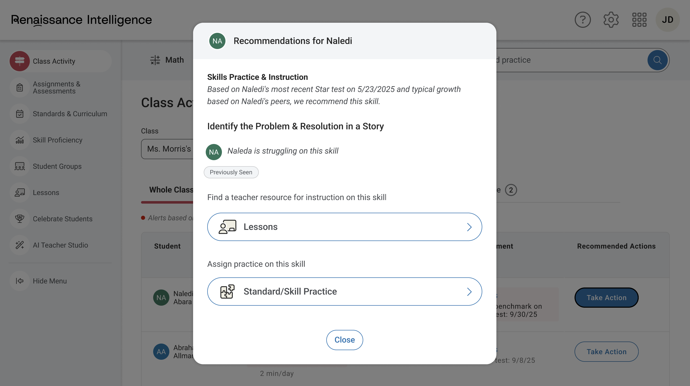

Renaissance Next / Renaissance Intelligence
Four years. One platform. The most complex design problem I've worked on—connecting Renaissance's entire product ecosystem into a unified experience for teachers and leaders, and now evolving that into an AI-powered Education Intelligence System.
View Project